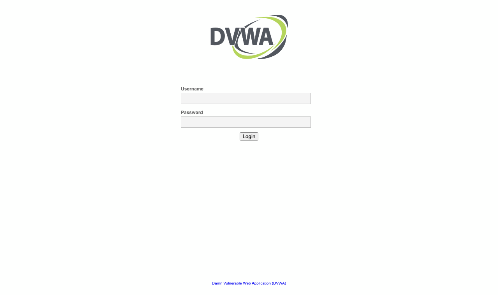
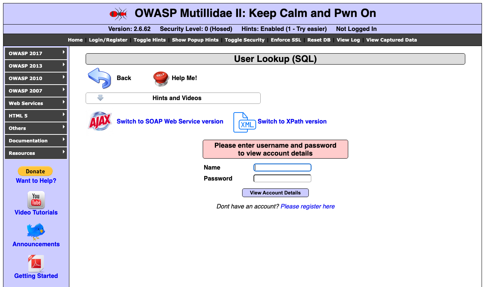

Trabajo final · SI6007 · laboratorio en vivo
Docker corriendo
Las cuatro aplicaciones del laboratorio activas en este equipo. Capturas tomadas en vivo de cada contenedor.
OWASP Juice ShopUp · :3000

DVWAUp · :8080

OWASP Mutillidae IIUp · :8081

SonarQube 9.9 LTSUp · :9000

Salida real de
docker ps$ docker ps NAMES IMAGE STATUS PORTS mutillidae citizenstig/nowasp Up 6 minutes 0.0.0.0:8081->80/tcp, [::]:8081->80/tcp juiceshop bkimminich/juice-shop Up 17 minutes 0.0.0.0:3000->3000/tcp, [::]:3000->3000/tcp dvwa vulnerables/web-dvwa Up 17 minutes 0.0.0.0:8080->80/tcp, [::]:8080->80/tcp sonarqube sonarqube:lts-community Up 2 hours 0.0.0.0:9000->9000/tcp, [::]:9000->9000/tcp